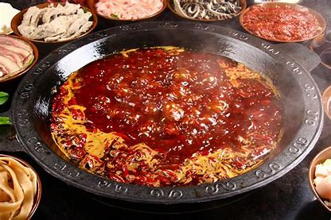

If choose a food to represent Chongqing, I think it must be hot pot! Hot pot is spicy, Chongqing people are more spicy! Warmness and boldness are the labels of Chongqing people. When it comes to Chongqing, you have to talk about hot pot. When it comes to hot pot, how can you not mention Chongqing. If you are not a good man without the Great Wall, how can you count as a Chongqing without a hot pot meal! Chongqing hot pot developed and expanded in Jiangbei City, Chongqing in the 1920s. Generally, after buying the raw buffalo tripe from a small retail vendor, it is washed and boiled, then the liver and belly are cut into small pieces, and a tandoor is placed in the dantou. , A large iron basin is set on the stove, and the basin is turned over for frying. Spicy hot pot originated in Chongqing during the Daoguang period of the Qing Dynasty. Maodu hot pot began to appear at Chongqing banquets. There are different opinions about the origin and origin of Maodu hot pot. According to the old neighborhood in Chongqing, Maodu hot pot originated in the late Qing Dynasty and the beginning of the Republic of China. , Chongqing wharf and street side people eat cheap and affordable. And it is with this chant of the Sichuan River that Chongqing hot pot has gradually stepped out of the sky and headed for the whole country!
ChongQing Hot pot is unique in the way of eating. In the old hot pot restaurant, special tall tables and stools, iron and copper pots, charcoal fire raging The soup is rolling in the pot, and the diners are condescending, staring at the dishes in the pot, toasting and waving, especially in the midsummer when the pot is in the middle of the summer, sweating in the fire. Among the characteristics of Chongqing's food culture, Chongqing hot pot is famous for its unique flavor and way of eating, the spicy flavor of authentic Sichuan, the fresh, tender and crispy, delicious taste of hot dishes. On the street, you can see all kinds of hot pot restaurants. How much Sichuan and Chongqing style, Bashu humanities are condensed in this boiling hot pot.